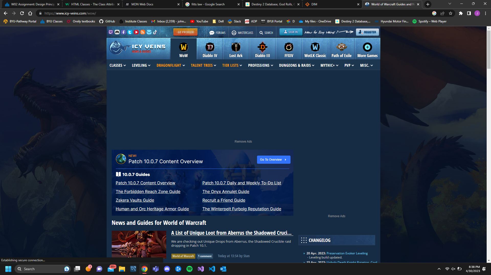
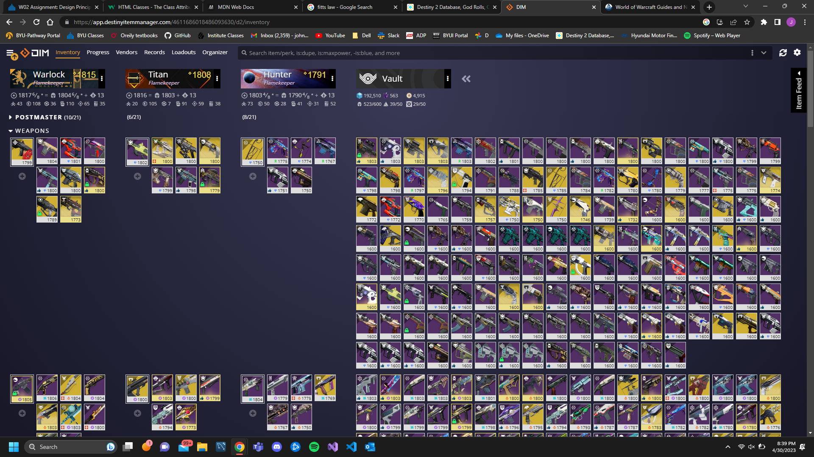
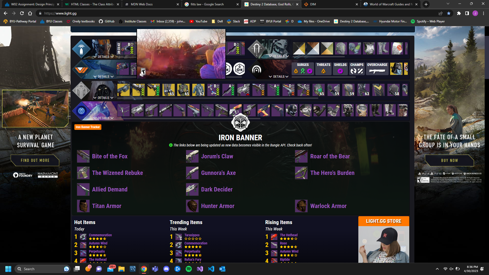

This website is an example of predicting where people are going to look. How they did that is that they put the games that people play at the top of the website in a bar menu. They put the main purpose of there webstie is to make it easy to go to the section that the user is wanting. In the bar menu you select a game and then it will pop up the menu's options for that game as well and will keep going until you narrow down your search. It is pretty simple

This is an example of how the user can be overloaded with a bunch of information at once. Making is so that they stay longer on the website becayse they are so bombarded with the information on the site.
